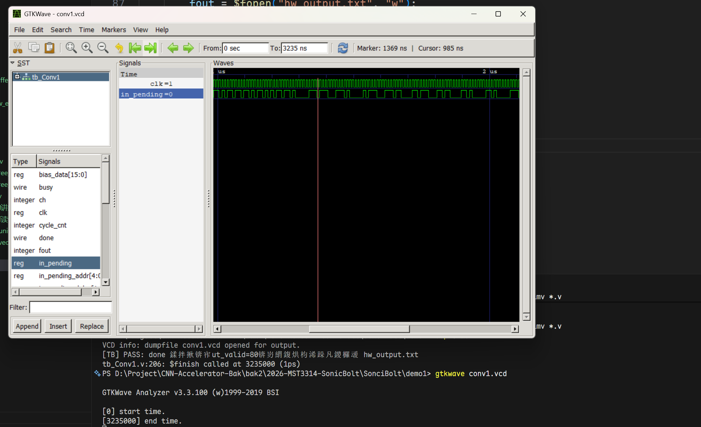
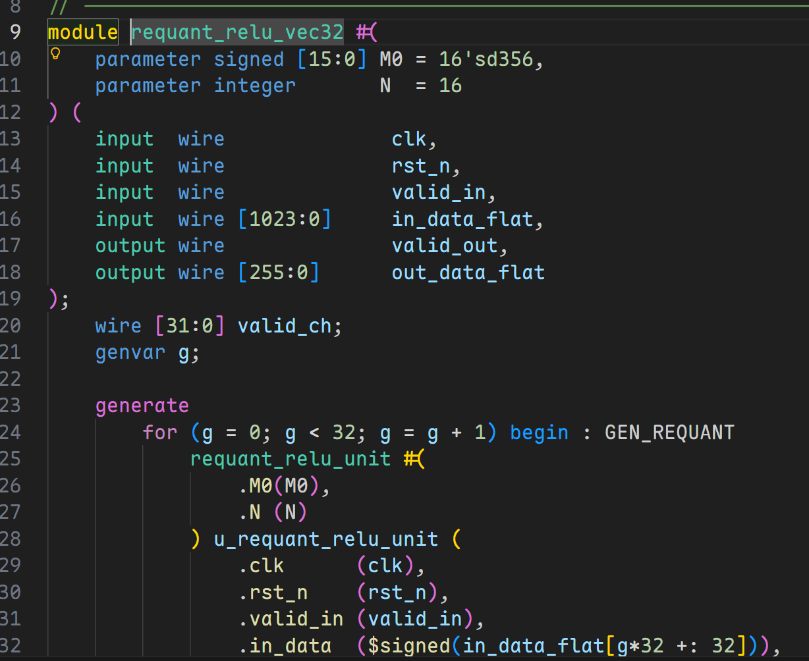
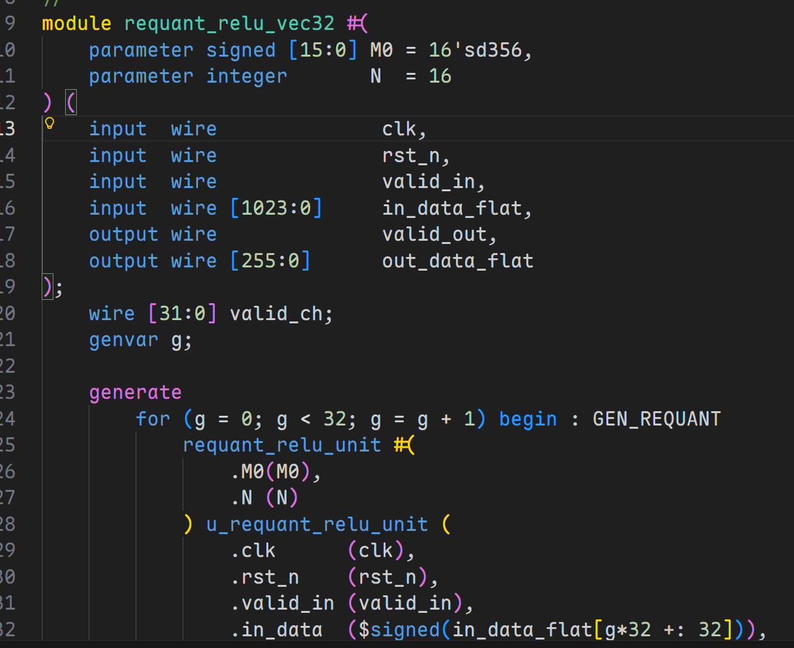
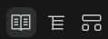

VS Code + Verilog 代码编辑工具链配置
以下操作针对：Windos 操作系统
I. Icarus Verilog 工具
1.1 安装 Icarus Verilog
推荐使用 官方 Windows 预编译版本。
下载界面：https://bleyer.org/icarus/
下载 Windows 版本，名字例如：
下载后双击运行即可，注意可以自定义安装目录
例如：
GTKWave
GTKWave 是一个波形查看工具，Icarus Verilog 的 Windows 预编译版本中已经包含了 GTKWave 的安装包，安装 Icarus Verilog 时会提示是否安装 GTKWave，建议安装。
安装完成后目录结构类似：
D:\EDA\iverilog\iverilog
├─bin
│ ├─iverilog.exe
│ ├─vvp.exe
│ └─...
├─gtkwave # 如果勾选了安装 GTKWave，则会有这个目录
│ ├─bin
├─include
└─lib
1.2 配置环境变量
安装完成后，将 bin\ 目录添加到系统环境变量 Path 中。
之后依次在 Powershell 中输入：
如果勾选了安装 GTKWave，则也需要将
gtkwave\bin\目录添加到系统环境变量Path中。
如果均成功显示版本信息，则说明配置成功。
1.3 运行！
假设当前目录有一个编译不报错的 Verilog 文件项目
1.3.1 编译
VS Code 中 Ctrl + ` 打开 PowerShell（或者你在 setting.json 中配置的启动终端，Windows 默认是 PowerShell）：
其中 -g2005-sv 是告诉编译器使用 SystemVerilog 2005 标准，-o simv 是指定输出的可执行文件名为 simv，*.v 是编译当前目录下的所有 .v 文件。
1.3.2 仿真
1.3.3 查看波形
如果想要查看波形，首先你得有波形文件才行！
在 testbench 脚本中用 \$dumpfile 和 \$dumpvars 语句生成波形文件
然后：
之后 powershell 调用 GTKWave 工具就会弹出一个图形界面，选择你生成的波形文件，就可以查看波形了。

II. SystemVerilog 插件：跨文件跳转
我们在写 Python, Rust, C++ 等高级语言时，IDE 都会提供跨文件跳转功能，例如在 Python 中按住 Ctrl 键点击一个函数调用，就可以跳转到该函数的定义处，这极大地提升了开发效率。这些文件跳转功能并非编程语言本省的特性，也并非 VS Code 本身功能，而是由第三方插件提供的功能支持；如果使用的是 Pycharm, CLion, Rust Analyzer 等 专业级IDE，跨文件跳转功能也是由这些 IDE 自带的，不需要额外安装。
但是在数字电路领域， Verilog 语言并没有一个像样的文本编辑工具能够完成诸如跨文件跳转、语法检查等功能，虽然 Vivado 和 Quartus 等综合工具提供了一个文本编辑器，但它们的编辑器功能非常有限，无法满足日常开发需求。
如果想要扩展编辑 Verilog 的体验，最好借助于 VS Code 的插件生态（虽然目前支持 Verilog 的插件并不多）。
VS Code 搜索插件：
注意插件开发者是：Eirik Prestegårdshus
该插件的功能：
- 语法高亮✅️
- 语法检查❓️
- 跨文件跳转✅️
注意，跨文件跳转功能需要额外下载一个叫做 ctags 的工具，安装方法：
1. 搜索 https://github.com/universal-ctags/ctags-win32
2. Release 页面下载 Windows 版本的预编.zip包
3. 解压到任意目录，例如 D:\EDA\ctags
4. 将 ctags.exe 所在文件夹的路径添加到系统环境变量 Path 中，或者记住该绝对路径，后续在 VS Code 插件设置中需要用到。
之后，在 VS Code 按 Crtl + Shift + P，输入 setting.json用户设置，添加如下键值对：
之后重启 VS Code，就可以点击子模块实现跨文件跳转了。
SystemVerilog 插件还附加了非常漂亮的语法高亮，能够让代码更清晰易读。例如：

语法检查功能缺失
此外，还有一个非常头疼的点就是，SystemVerilog 插件似乎无法做语法检查，例如 always @ 语句少了一个@，该插件无法检测出来，虽然我们的编译工具和综合工具能够在综合时发现问题，但无法在编辑时提供实时反馈，影响开发效率。
如果想要语法检查功能，可以安装一个叫做 Verilog-HDL/SystemVerilog/Bluespec SystemVerilog 的插件，见下一节。
但请注意：如果启用 Verilog-HDL/SystemVerilog/Bluespec SystemVerilog 插件，会导致 SystemVerilog 插件的语法高亮效果损失一部分，但是跨文件跳转功能正常。
也不是完全不行？
见第三步的黑魔法，能够同时启用语法高亮、跨文件跳转功能和语法检查功能。
III. Verilog-HDL/SystemVerilog/Bluespec SystemVerilog 插件：语法检查
3.1 语法检查
如果你还没有安装 Icarus Verilog，请立即回到第一步先安装 Icarus Verilog，因为该插件的语法检查功能依赖于 Icarus Verilog 的编译器来实现。
VS Code 插件市场搜索 Verilog-HDL/SystemVerilog/Bluespec SystemVerilog，安装由 Mshr-H 开发的插件。
然后按 Crtl + Shift + P，输入 setting.json用户设置，添加如下键值对：
// --- mshr-h 插件配置：只做查错 ---
"verilog.linting.linter": "iverilog",
"verilog.linting.iverilog.runAtFileLocation": true, // 【关键1】让 iverilog 在当前文件所在目录运行
"verilog.linting.iverilog.arguments": "-y .", // 【关键2】告诉 iverilog 去当前目录('.')寻找未知的子模块！解决误报！
"verilog.ctags.path": "<改成你的ctags.exe的绝对路径>", // 防止控制台吭哧吭哧刷报错
"verilog.hover.enable": true, // 开启悬停提示
之后，就可以同时完成语法检查了，但是
SystemVerilog 插件的语法高亮效果会损失一部分（如下图，可以与之前的高亮效果对比以下），但跨文件跳转功能正常。
3.2 黑魔法
如果你硬要想同时启用 SystemVerilog 插件的语法高亮、跨文件跳转功能和 Verilog-HDL/SystemVerilog/Bluespec SystemVerilog 插件的语法检查功能，有一个黑魔法：
我们强制让插件把 .v 文件识别为 SystemVerilog 文件！
只需要在 setting.json 用户设置中添加如下键值对：
IV. TerosHDL
4.1 TerosHDL 插件介绍
相比前面两个工具，TerosHDL 是一款致力于将 VS Code 打造为全功能 FPGA IDE 的开源插件。在我们的这套方案中，我们主要利用它极其出色的代码分析能力和图形化渲染能力。
它的核心优势是足够轻量化，无需安装庞大的商业 EDA 软件（如 Vivado/Quartus），即可通过轻量级工具链实现 RTL 电路图预览。杀手锏功能：
- Schematic Viewer：自动解析代码连线，生成可交互的 RTL 原理图。
- State Machine Viewer：自动提取 always 块中的 case 逻辑，绘制状态转移图（FSM）。
- 自动例化与文档生成：提供快速的代码重构支持。
安装前请注意
这些功能仅仅属于锦上添花级别，如果SystemVerilog插件和Verilog-HDL/SystemVerilog/Bluespec SystemVerilog插件已经解决了你的问题，那么你完全可以不安装 TerosHDL 插件，因为该插件相比前两个插件本身比较笨重，安装后会占用较多的系统资源，可能会导致 VS Code 运行变慢。或者可以将其安装在 VS Code Insider 中，专门用于查看 RTL 原理图和状态转移图。
4.2 环境配置
TerosHDL 的原理图功能依赖于 Yosys（开源逻辑综合工具）。在 Windows 下，最稳妥、最现代的安装方式是使用 Yowasp（Python 移植版），它不需要复杂的环境变量配置。
安装方法：
如果你不想污染你的全局python环境，当然可以使用 venv, uv, conda等方法虚拟环境，这里不再介绍。
安装完毕后，必须确保命令行能够找到 yowasp-yosys，可以在 PowerShell 中输入：
如果能够返回版本信息，则说明安装成功。
4.3 TerosHDL 配置步骤
在 VS Code 插件市场中搜索 TerosHDL，安装。
- 第一步：进入配置界面
点击 VS Code 左侧活动栏的TerosHDL图标，在弹出面板中点击Open Global SettingS Menu。 - 第二步：配置原理图引擎 (Schematic Viewer)
在配置页面的左侧导航栏找到 Schematic Viewer，进行以下设置：
Select the backend: 选择 YOWASP(Only Verilog/SV)。
然后点击Apply。 - 第三步：规避插件冲突 (Linter)
由于我们已经有 mshr-h 插件负责语法检查，需要关闭 TerosHDL 的相关功能以节省性能并防止重复报错：
回到配置页面，左侧导航栏找到 Linter settings，点击，进去将所有项设置为Disabled即可。
然后点击Apply。
然后打开setting.json用户设置，添加如下键值对：
4.4 使用示例
VS Code中随便打开一个 .v 或者 .sv 文件，在编辑器右上角会出现这三个图标：

从左到右分别是：
- 自动例化与文档生成：自动化生成该 RTL 的端口分析文档。
- Schematic Viewer：自动解析代码连线，生成可交互的 RTL 原理图。
- State Machine Viewer：自动提取 always 块中的 case 逻辑，绘制状态转移图（FSM）。
尤其是后面两个效果很不错，写完 RTL 后可以快速帮你排查当前模块的功能实现是不是符合你的预期！
V. 一些调试反馈
5.1 跨文件跳转的 bug
SystemVerilog 插件的跨文件跳转功能偶尔会失效
只有当待跳转的模块打开后，才能跨文件跳转，并且不保证100%成功，目前不清楚原因，也没有找到一个稳定的解决方案。